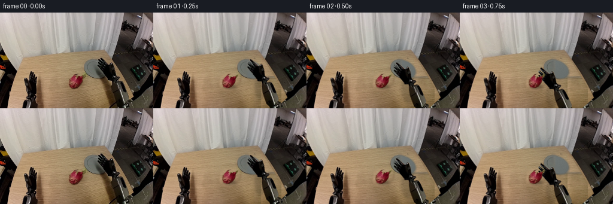
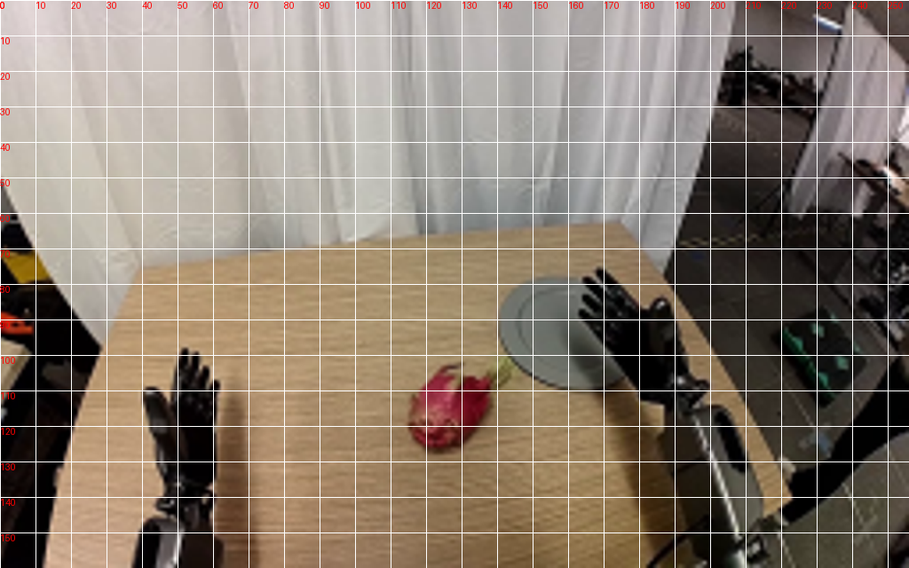
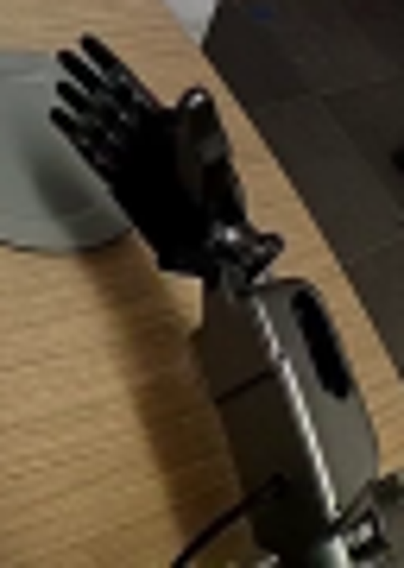
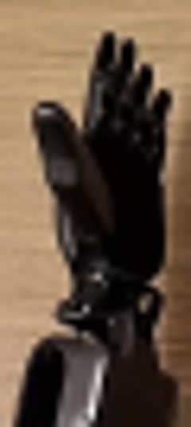
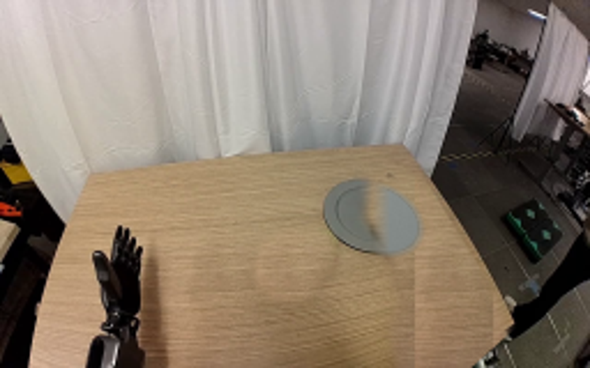
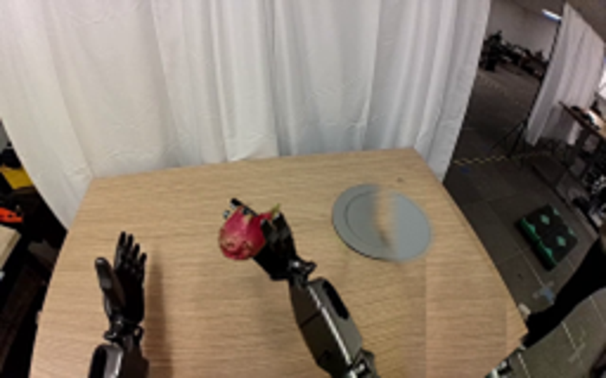
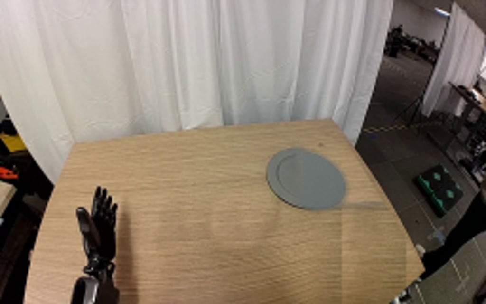
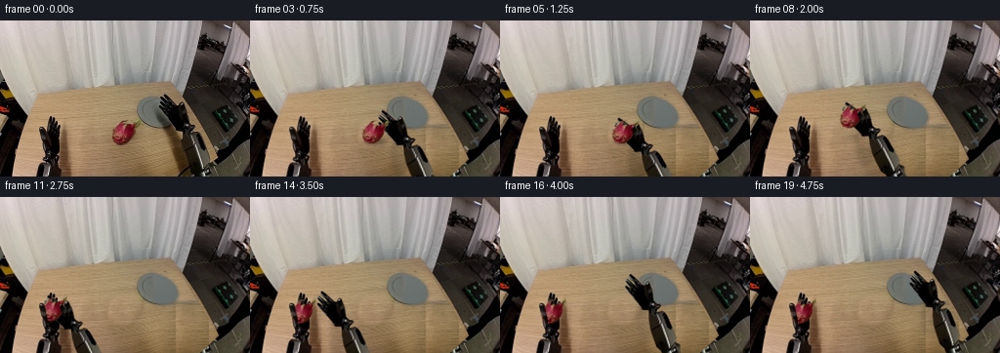

CODING AGENTS AS PIXEL WORLD MODELS
traex/GPT-6.1-Sol · common50_0038
点击播放 · 原生 RGB 像素
逐轮保存的候选
回放视频、检查图与代码变化。
每份候选均可单独播放。实际图片检查记录在下方工具轨迹中。
候选 01播放与检查图
点击播放 · 原生 RGB 像素

展开代码变化
--- 上一保存版本
+++ 本次保存版本
@@ -0,0 +1,139 @@
+from pathlib import Path
+import numpy as np
+from PIL import Image, ImageDraw, ImageFilter
+import artifact_io
+
+ROOT = Path(__file__).resolve().parent
+W,H=256,160
+S=4
+src=Image.open(ROOT/'first_frame.png').convert('RGB')
+a=np.array(src)
+
+def poly(points,size=(W,H), blur=0):
+ im=Image.new('L',(size[0]*S,size[1]*S),0)
+ ImageDraw.Draw(im).polygon([(round(x*S),round(y*S)) for x,y in points],fill=255)
+ im=im.resize(size,Image.Resampling.LANCZOS)
+ return im.filter(ImageFilter.GaussianBlur(blur)) if blur else im
+
+right_points=[(168.4,76.0),(170.0,76),(177.6,83.1),(183.0,88.0),(184.2,86.0),(186.3,83.8),(188.1,84.0),(189.3,85.2),(191.4,93.7),(192.0,103.2),(194.4,105.8),(198.3,106.9),(200.0,108.7),(198.4,110.7),(195.6,112.5),(195.7,115.1),(200.4,114),(203.1,114.9),(205.7,119),(210.0,129),(214.4,142.0),(214.0,146.6),(218.5,149),(218.0,160),(201.1,160),(199.0,155),(194.4,151),(190.1,139),(188.0,131),(186.4,116.0),(187.0,113),(182.5,112.9),(178.9,111.9),(177.0,106.6),(173.7,102.7),(167.1,95.1),(163.7,90.1),(163.5,88.1),(164.8,87.4),(166.2,88.3),(170.1,92.2),(167.2,87.5),(164.0,82.9),(164.1,81),(165.4,80.4),(167.5,82),(172.2,86.0),(174.5,88),(173.1,84.8),(169.4,81.4),(167.3,79.1),(167.3,77.1)]
+right_mask=poly(right_points)
+fruit_points=[(115.0,117.0),(115.3,113.5),(118.2,109.3),(120.1,106.6),(124.0,103.0),(128.4,102.0),(130.4,102.3),(127.0,103.3),(125.8,105.4),(126.6,107.2),(129.1,106.3),(131.7,108.2),(134.5,106.1),(136.0,106.4),(137.8,105.8),(139.3,103.3),(142.1,103.2),(141.0,107.1),(137.8,110.3),(137.1,116.0),(134.6,119.9),(130.7,124.0),(126.1,126.1),(121.6,125.6),(117.4,123.9),(115.8,120.6)]
+fruit_mask=poly(fruit_points)
+
+# Reconstruct only the surfaces that will be uncovered. Sample unobstructed
+# neighboring wood in the same rows to preserve the original grain.
+Y,X=np.mgrid[0:H,0:W]
+table_mask=np.array(poly([(10,160),(28,94),(36,75),(175,63),(224,142),(204,160)]))/255.
+wood=np.zeros_like(a)
+for y in range(H):
+ for x in range(W):
+ donor=78+((x-78)%34)
+ val=a[y,donor].astype(float)
+ # slow illumination change along the tabletop
+ gain=1.-0.00053*(x-donor)
+ wood[y,x]=np.clip(val*gain,0,255)
+# Smooth the repetitive seam but retain the photographic horizontal wood grain.
+woodim=Image.fromarray(wood).filter(ImageFilter.GaussianBlur(.35))
+# Original right arm, hand, cable and their cast shadow.
+removal=poly([(161,75),(176,74),(193,82),(199,102),(207,111),(212,123),(220,143),(222,160),(172,160),(169,145),(172,129),(169,115),(164,102),(158,95)],blur=2.2)
+rm=np.array(removal)/255.*table_mask
+bg=np.clip(a*(1-rm[:,:,None])+np.array(woodim)*rm[:,:,None],0,255).astype(np.uint8)
+# remove original fruit and its soft shadow with a locally seamless donor patch
+frem=poly([(114,106),(122,100),(134,100),(144,101),(145,112),(139,125),(131,131),(118,130),(111,124),(111,114)],blur=1.5)
+fm=np.array(frem)/255.
+patch=np.empty_like(a)
+for y in range(H):
+ for x in range(W):
+ xx=x-30
+ patch[y,x]=a[y,max(0,xx)]
+bg=(bg*(1-fm[:,:,None])+patch*fm[:,:,None]).astype(np.uint8)
+# Recover the round ceramic plate behind the gripper. Keep the photographed
+# visible side, and analytically reconstruct only the newly exposed sector.
+cx,cy=162.,94.3
+th=np.deg2rad(25)
+u=(X-cx)*np.cos(th)+(Y-cy)*np.sin(th)
+v=-(X-cx)*np.sin(th)+(Y-cy)*np.cos(th)
+r=np.sqrt((u/22.9)**2+(v/15.6)**2)
+platealpha=np.clip((1.03-r)*5.,0,1)
+rng=np.random.default_rng(123)
+noise=rng.normal(0,.6,(H,W))
+shade=139-0.1*(X-cx)-0.18*(Y-cy)+noise
+rim=np.exp(-((r-.88)/.024)**2)*14 + np.exp(-((r-.988)/.035)**2)*11
+plate=np.stack([shade-rim-5,shade-rim+1,shade-rim-1],axis=-1)
+# retain left plate pixels, replace the occluded hand and its shadow on right
+pc=np.clip((X-161)/8.,0,1)*platealpha
+bg=(bg*(1-pc[:,:,None])+np.clip(plate,0,255)*pc[:,:,None]).astype(np.uint8)
+background=Image.fromarray(bg)
+background.save(ROOT/'background.png')
+
+# Rigid photographic components. Similarity transforms never stretch the arm
+# or the fruit; all motion is a translation plus a small wrist rotation.
+def sprite(mask):
+ im=src.convert('RGBA');im.putalpha(mask);return im
+right=sprite(right_mask)
+fruit=sprite(fruit_mask)
+left_thumb=sprite(poly([(40.6,110.7),(41.1,109),(43.4,109),(45.5,111),(46.6,114.7),(46.8,118),(47.9,122.6),(49,127.3),(48.2,131.3),(46.3,130.1),(44.5,125.8),(43.2,120.8),(41.8,115.7)]))
+# Extend the lower end of the original rigid casing below the camera frustum.
+# Its length is unchanged; this small hidden portion is needed for lift poses.
+ext=Image.new('RGBA',(W,220))
+ext.paste(right,(0,0))
+d=ImageDraw.Draw(ext)
+d.polygon([(202,157),(217,154),(238,220),(224,220)],fill=(46,48,44,255))
+d.line([(215,157),(234,220)],fill=(109,114,103,255),width=3)
+ext.paste(right,(0,0),right)
+right=ext
+
+def transform(im,center,target,angle=0,scale=1):
+ theta=np.deg2rad(angle);c=np.cos(theta);s=np.sin(theta)
+ # Inverse map, at supersampled output resolution.
+ aa=c/(scale*S);bb=s/(scale*S);dd=-s/(scale*S);ee=c/(scale*S)
+ cc=center[0]-(c*target[0]+s*target[1])/scale
+ ff=center[1]-(-s*target[0]+c*target[1])/scale
+ return im.transform((W*S,H*S),Image.Transform.AFFINE,(aa,bb,cc,dd,ee,ff),Image.Resampling.BICUBIC)
+
+def shadow(im,center,rx,ry,opacity):
+ m=Image.new('L',im.size,0);d=ImageDraw.Draw(m)
+ d.ellipse(((center[0]-rx)*S,(center[1]-ry)*S,(center[0]+rx)*S,(center[1]+ry)*S),fill=round(opacity))
+ m=m.filter(ImageFilter.GaussianBlur(2.0*S))
+ black=Image.new('RGBA',im.size,(22,17,9,0));black.putalpha(m)
+ return Image.alpha_composite(im,black)
+
+# Right palm positions and rigid wrist orientations. The invisible upper arm
+# carries the forearm through this pick, lift, carry, handoff and withdrawal.
+palms=[(182,102),(176,104),(165,109),(151,117),(141,123),(138,124),(138,117),(132,108),(115,108),(94,113),(78,120),(66,125),(65,127),(69,128),(88,122),(117,112),(147,105),(173,102),(182,102),(182,102)]
+fruits=[(127,115.7)]*6+[(127,108.7),(121,99.7),(104,99.7),(83,104.7),(67,111.7),(55,116.7),(54,119.2),(54,119.2),(54,119.2),(54,119.2),(54,119.2),(54,119.2),(54,119.2),(54,119.2)]
+angles=[0,-1,-3,-5,-7,-8,-8,-8,-8,-8,-8,-8,-8,-5,-3,-2,-1,0,0,0]
+frames=[]
+for i in range(20):
+ if i==0:
+ frames.append(a.copy());continue
+ canvas=background.resize((W*S,H*S),Image.Resampling.BICUBIC).convert('RGBA')
+ palm=palms[i];fruitpos=fruits[i]
+ # Arm shadow trails its rigid forearm across the tabletop. Increasing
+ # height during the lift makes the shadow broader and lighter.
+ canvas=shadow(canvas,(palm[0]+3,palm[1]+20),10,22,48 if i<6 else 32)
+ if i<6:
+ canvas=shadow(canvas,(127.8,123.7),10.8,4.4,96)
+ elif i<12:
+ canvas=shadow(canvas,(fruitpos[0]+4,fruitpos[1]+19),10,4,35)
+ hand=transform(right,(182,102),palm,angles[i])
+ canvas=Image.alpha_composite(canvas,hand)
+ fruit_angle=0 if i<6 else -min(i-5,6)*1.2
+ fr=transform(fruit,(127,115.7),fruitpos,fruit_angle)
+ canvas=Image.alpha_composite(canvas,fr)
+ # The original right thumb remains rigid and closes around the right flank
+ # of the fruit. It releases before the gripper retreats.
+ if 5<=i<=12:
+ thumb_mask=poly([(185.0,88),(186.0,85.4),(187.8,84.5),(189.0,85.5),(190.2,90),(191.5,98),(191.5,102.5),(188.4,102.8),(186,98),(184.7,92)])
+ thumb=sprite(thumb_mask)
+ # rotate at the thumb knuckle to make one rigid closing segment.
+ tm=transform(thumb,(188.0,102), (palm[0]+3.0,palm[1]+.5),-21 if i>=6 else -12)
+ canvas=Image.alpha_composite(canvas,tm)
+ if i>=11:
+ # Near-side left thumb occludes the fruit naturally while its palm and
+ # fingers support the fruit. The receiving arm remains entirely fixed.
+ canvas=Image.alpha_composite(canvas,left_thumb.resize((W*S,H*S),Image.Resampling.BICUBIC))
+ out=np.array(canvas.convert('RGB').resize((W,H),Image.Resampling.LANCZOS))
+ frames.append(out)
+frames=np.stack(frames).astype(np.uint8)
+artifact_io.save(frames,ROOT)
候选 02播放与检查图
点击播放 · 原生 RGB 像素


展开代码变化
--- 上一保存版本
+++ 本次保存版本
@@ -47,6 +47,16 @@
xx=x-30
patch[y,x]=a[y,max(0,xx)]
bg=(bg*(1-fm[:,:,None])+patch*fm[:,:,None]).astype(np.uint8)
+# A wide feathered continuation of the clear wood removes the old arm's
+# lighting footprint without rectangular cut-and-paste boundaries.
+wood2=np.array(woodim).astype(float)
+for y in range(106,H):
+ reference=a[y,150:166].astype(float).mean(axis=0)
+ donor=wood2[y,150:166].mean(axis=0)
+ wood2[y]+=reference-donor
+ wood2[y]-=np.maximum(X[y]-164,0)[:,None]*np.array([.12,.12,.13])
+blend=np.clip((X-161)/14.,0,1)*np.clip((Y-103)/9.,0,1)*table_mask
+bg=(bg*(1-blend[:,:,None])+np.clip(wood2,0,255)*blend[:,:,None]).astype(np.uint8)
# Recover the round ceramic plate behind the gripper. Keep the photographed
# visible side, and analytically reconstruct only the newly exposed sector.
cx,cy=162.,94.3
@@ -57,11 +67,11 @@
platealpha=np.clip((1.03-r)*5.,0,1)
rng=np.random.default_rng(123)
noise=rng.normal(0,.6,(H,W))
-shade=139-0.1*(X-cx)-0.18*(Y-cy)+noise
+shade=113-0.1*(X-cx)-0.18*(Y-cy)+noise
rim=np.exp(-((r-.88)/.024)**2)*14 + np.exp(-((r-.988)/.035)**2)*11
plate=np.stack([shade-rim-5,shade-rim+1,shade-rim-1],axis=-1)
# retain left plate pixels, replace the occluded hand and its shadow on right
-pc=np.clip((X-161)/8.,0,1)*platealpha
+pc=np.clip((X-153)/7.,0,1)*platealpha
bg=(bg*(1-pc[:,:,None])+np.clip(plate,0,255)*pc[:,:,None]).astype(np.uint8)
background=Image.fromarray(bg)
background.save(ROOT/'background.png')
候选 03播放与检查图
点击播放 · 原生 RGB 像素

展开代码变化
--- 上一保存版本
+++ 本次保存版本
@@ -27,7 +27,8 @@
wood=np.zeros_like(a)
for y in range(H):
for x in range(W):
- donor=78+((x-78)%34)
+ phase=(x-78)%66
+ donor=78+(phase if phase<=33 else 66-phase)
val=a[y,donor].astype(float)
# slow illumination change along the tabletop
gain=1.-0.00053*(x-donor)
@@ -51,8 +52,9 @@
# lighting footprint without rectangular cut-and-paste boundaries.
wood2=np.array(woodim).astype(float)
for y in range(106,H):
- reference=a[y,150:166].astype(float).mean(axis=0)
- donor=wood2[y,150:166].mean(axis=0)
+ yy=max(y,115)
+ reference=a[yy,150:166].astype(float).mean(axis=0)
+ donor=np.array(woodim)[yy,150:166].astype(float).mean(axis=0)
wood2[y]+=reference-donor
wood2[y]-=np.maximum(X[y]-164,0)[:,None]*np.array([.12,.12,.13])
blend=np.clip((X-161)/14.,0,1)*np.clip((Y-103)/9.,0,1)*table_mask
可观测工具轨迹
实际执行的命令与返回图片。
命令 1exit 0
/bin/bash -lc 'ls -la && cat prompt.txt && cat GENERATION_RULES.md'
命令 2exit 0
/bin/bash -lc 'cat task_spec.json && cat artifact_io.py'
命令 3exit 0
/bin/bash -lc "python - <<'PY'
from PIL import Image
im=Image.open('first_frame.png'); print(im.size); im.resize((1024,640)).save('source_large.png')
PY"命令 4exit 0
/bin/bash -lc "python - <<'PY'
from PIL import Image,ImageDraw
im=Image.open('first_frame.png').resize((1024,640))
d=ImageDraw.Draw(im)
for x in range(0,256,10):
d.line((x*4,0,x*4,640),fill=(255,255,255),width=1);d.text((x*4,0),str(x),fill=(255,0,0))
for y in range(0,160,10):
d.line((0,y*4,1024,y*4),fill=(255,255,255),width=1);d.text((0,y*4),str(y),fill=(255,0,0))
im.save('grid.png')
PY"命令 5exit 0
/bin/bash -lc "python - <<'PY'
from PIL import Image
im=Image.open('first_frame.png');im.resize((1280,800),Image.Resampling.NEAREST).save('nearest.png')
PY"命令 6exit 0
/bin/bash -lc "python - <<'PY'
from PIL import Image
im=Image.open('first_frame.png')
im.crop((155,70,219,160)).resize((512,720)).save('right.png')
im.crop((35,93,65,160)).resize((240,536)).save('left.png')
PY"命令 7exit 0
/bin/bash -lc "cat > generate.py <<'PY'
from pathlib import Path
import numpy as np
from PIL import Image, ImageDraw, ImageFilter
import artifact_io
ROOT = Path(__file__).resolve().parent
W,H=256,160
S=4
src=Image.open(ROOT/'first_frame.png').convert('RGB')
a=np.array(src)
def poly(points,size=(W,H), blur=0):
im=Image.new('L',(size[0]*S,size[1]*S),0)
ImageDraw.Draw(im).polygon([(round(x*S),round(y*S)) for x,y in points],fill=255)
im=im.resize(size,Image.Resampling.LANCZOS)
return im.filter(ImageFilter.GaussianBlur(blur)) if blur else im
right_points=[(168.4,76.0),(170.0,76),(177.6,83.1),(183.0,88.0),(184.2,86.0),(186.3,83.8),(188.1,84.0),(189.3,85.2),(191.4,93.7),(192.0,103.2),(194.4,105.8),(198.3,106.9),(200.0,108.7),(198.4,110.7),(195.6,112.5),(195.7,115.1),(200.4,114),(203.1,114.9),(205.7,119),(210.0,129),(214.4,142.0),(214.0,146.6),(218.5,149),(218.0,160),(201.1,160),(199.0,155),(194.4,151),(190.1,139),(188.0,131),(186.4,116.0),(187.0,113),(182.5,112.9),(178.9,111.9),(177.0,106.6),(173.7,102.7),(167.1,95.1),(163.7,90.1),(163.5,88.1),(164.8,87.4),(166.2,88.3),(170.1,92.2),(167.2,87.5),(164.0,82.9),(164.1,81),(165.4,80.4),(167.5,82),(172.2,86.0),(174.5,88),(173.1,84.8),(169.4,81.4),(167.3,79.1),(167.3,77.1)]
right_mask=poly(right_points)
fruit_points=[(115.0,117.0),(115.3,113.5),(118.2,109.3),(120.1,106.6),(124.0,103.0),(128.4,102.0),(130.4,102.3),(127.0,103.3),(125.8,105.4),(126.6,107.2),(129.1,106.3),(131.7,108.2),(134.5,106.1),(136.0,106.4),(137.8,105.8),(139.3,103.3),(142.1,103.2),(141.0,107.1),(137.8,110.3),(137.1,116.0),(134.6,119.9),(130.7,124.0),(126.1,126.1),(121.6,125.6),(117.4,123.9),(115.8,120.6)]
fruit_mask=poly(fruit_points)
# Reconstruct only the surfaces that will be uncovered. Sample unobstructed
# neighboring wood in the same rows to preserve the original grain.
Y,X=np.mgrid[0:H,0:W]
table_mask=np.array(poly([(10,160),(28,94),(36,75),(175,63),(224,142),(204,160)]))/255.
wood=np.zeros_like(a)
for y in range(H):
for x in range(W):
donor=78+((x-78)%34)
val=a[y,donor].astype(float)
# slow illumination change along the tabletop
gain=1.-0.00053*(x-donor)
wood[y,x]=np.clip(val*gain,0,255)
# Smooth the repetitive seam but retain the photographic horizontal wood grain.
woodim=Image.fromarray(wood).filter(ImageFilter.GaussianBlur(.35))
# Original right arm, hand, cable and their cast shadow.
removal=poly([(161,75),(176,74),(193,82),(199,102),(207,111),(212,123),(220,143),(222,160),(172,160),(169,145),(172,129),(169,115),(164,102),(158,95)],blur=2.2)
rm=np.array(removal)/255.*table_mask
bg=np.clip(a*(1-rm[:,:,None])+np.array(woodim)*rm[:,:,None],0,255).astype(np.uint8)
# remove original fruit and its soft shadow with a locally seamless donor patch
frem=poly([(114,106),(122,100),(134,100),(144,101),(145,112),(139,125),(131,131),(118,130),(111,124),(111,114)],blur=1.5)
fm=np.array(frem)/255.
patch=np.empty_like(a)
for y in range(H):
for x in range(W):
xx=x-30
patch[y,x]=a[y,max(0,xx)]
bg=(bg*(1-fm[:,:,None])+patch*fm[:,:,None]).astype(np.uint8)
# Recover the round ceramic plate behind the gripper. Keep the photographed
# visible side, and analytically reconstruct only the newly exposed sector.
cx,cy=162.,94.3
th=np.deg2rad(25)
u=(X-cx)*np.cos(th)+(Y-cy)*np.sin(th)
v=-(X-cx)*np.sin(th)+(Y-cy)*np.cos(th)
r=np.sqrt((u/22.9)**2+(v/15.6)**2)
platealpha=np.clip((1.03-r)*5.,0,1)
rng=np.random.default_rng(123)
noise=rng.normal(0,.6,(H,W))
shade=139-0.1*(X-cx)-0.18*(Y-cy)+noise
rim=np.exp(-((r-.88)/.024)**2)*14 + np.exp(-((r-.988)/.035)**2)*11
plate=np.stack([shade-rim-5,shade-rim+1,shade-rim-1],axis=-1)
# retain left plate pixels, replace the occluded hand and its shadow on right
pc=np.clip((X-161)/8.,0,1)*platealpha
bg=(bg*(1-pc[:,:,None])+np.clip(plate,0,255)*pc[:,:,None]).astype(np.uint8)
background=Image.fromarray(bg)
background.save(ROOT/'background.png')
# Rigid photographic components. Similarity transforms never stretch the arm
# or the fruit; all motion is a translation plus a small wrist rotation.
def sprite(mask):
im=src.convert('RGBA');im.putalpha(mask);return im
right=sprite(right_mask)
fruit=sprite(fruit_mask)
left_thumb=sprite(poly([(40.6,110.7),(41.1,109),(43.4,109),(45.5,111),(46.6,114.7),(46.8,118),(47.9,122.6),(49,127.3),(48.2,131.3),(46.3,130.1),(44.5,125.8),(43.2,120.8),(41.8,115.7)]))
# Extend the lower end of the original rigid casing below the camera frustum.
# Its length is unchanged; this small hidden portion is needed for lift poses.
ext=Image.new('RGBA',(W,220))
ext.paste(right,(0,0))
d=ImageDraw.Draw(ext)
d.polygon([(202,157),(217,154),(238,220),(224,220)],fill=(46,48,44,255))
d.line([(215,157),(234,220)],fill=(109,114,103,255),width=3)
ext.paste(right,(0,0),right)
right=ext
def transform(im,center,target,angle=0,scale=1):
theta=np.deg2rad(angle);c=np.cos(theta);s=np.sin(theta)
# Inverse map, at supersampled output resolution.
aa=c/(scale*S);bb=s/(scale*S);dd=-s/(scale*S);ee=c/(scale*S)
cc=center[0]-(c*target[0]+s*target[1])/scale
ff=center[1]-(-s*target[0]+c*target[1])/scale
return im.transform((W*S,H*S),Image.Transform.AFFINE,(aa,bb,cc,dd,ee,ff),Image.Resampling.BICUBIC)
def shadow(im,center,rx,ry,opacity):
m=Image.new('L',im.size,0);d=ImageDraw.Draw(m)
d.ellipse(((center[0]-rx)*S,(center[1]-ry)*S,(center[0]+rx)*S,(center[1]+ry)*S),fill=round(opacity))
m=m.filter(ImageFilter.GaussianBlur(2.0*S))
black=Image.new('RGBA',im.size,(22,17,9,0));black.putalpha(m)
return Image.alpha_composite(im,black)
# Right palm positions and rigid wrist orientations. The invisible upper arm
# carries the forearm through this pick, lift, carry, handoff and withdrawal.
palms=[(182,102),(176,104),(165,109),(151,117),(141,123),(138,124),(138,117),(132,108),(115,108),(94,113),(78,120),(66,125),(65,127),(69,128),(88,122),(117,112),(147,105),(173,102),(182,102),(182,102)]
fruits=[(127,115.7)]*6+[(127,108.7),(121,99.7),(104,99.7),(83,104.7),(67,111.7),(55,116.7),(54,119.2),(54,119.2),(54,119.2),(54,119.2),(54,119.2),(54,119.2),(54,119.2),(54,119.2)]
angles=[0,-1,-3,-5,-7,-8,-8,-8,-8,-8,-8,-8,-8,-5,-3,-2,-1,0,0,0]
frames=[]
for i in range(20):
if i==0:
frames.append(a.copy());continue
canvas=background.resize((W*S,H*S),Image.Resampling.BICUBIC).convert('RGBA')
palm=palms[i];fruitpos=fruits[i]
# Arm shadow trails its rigid forearm across the tabletop. Increasing
# height during the lift makes the shadow broader and lighter.
canvas=shadow(canvas,(palm[0]+3,palm[1]+20),10,22,48 if i<6 else 32)
if i<6:
canvas=shadow(canvas,(127.8,123.7),10.8,4.4,96)
elif i<12:
canvas=shadow(canvas,(fruitpos[0]+4,fruitpos[1]+19),10,4,35)
hand=transform(right,(182,102),palm,angles[i])
canvas=Image.alpha_composite(canvas,hand)
fruit_angle=0 if i<6 else -min(i-5,6)*1.2
fr=transform(fruit,(127,115.7),fruitpos,fruit_angle)
canvas=Image.alpha_composite(canvas,fr)
# The original right thumb remains rigid and closes around the right flank
# of the fruit. It releases before the gripper retreats.
if 5<=i<=12:
thumb_mask=poly([(185.0,88),(186.0,85.4),(187.8,84.5),(189.0,85.5),(190.2,90),(191.5,98),(191.5,102.5),(188.4,102.8),(186,98),(184.7,92)])
thumb=sprite(thumb_mask)
# rotate at the thumb knuckle to make one rigid closing segment.
tm=transform(thumb,(188.0,102), (palm[0]+3.0,palm[1]+.5),-21 if i>=6 else -12)
canvas=Image.alpha_composite(canvas,tm)
if i>=11:
# Near-side left thumb occludes the fruit naturally while its palm and
# fingers support the fruit. The receiving arm remains entirely fixed.
canvas=Image.alpha_composite(canvas,left_thumb.resize((W*S,H*S),Image.Resampling.BICUBIC))
out=np.array(canvas.convert('RGB').resize((W,H),Image.Resampling.LANCZOS))
frames.append(out)
frames=np.stack(frames).astype(np.uint8)
artifact_io.save(frames,ROOT)
PY
python generate.py"命令 8exit 0
/bin/bash -lc "python - <<'PY'
from PIL import Image
Image.open('background.png').resize((1024,640)).save('background_large.png')
Image.open('frames/08.png').resize((1024,640)).save('frame8_large.png')
PY"命令 9exit 0
/bin/bash -lc "python - <<'PY'
import numpy as np
from PIL import Image
a=np.array(Image.open('first_frame.png'))
for y in [85,110,120,130,145,155]:
print(y,[(x,a[y,x].tolist()) for x in [90,105,145,160,170,180,190,210]])
PY"命令 10exit 0
/bin/bash -lc "python generate.py && python - <<'PY'
from PIL import Image
Image.open('background.png').resize((1024,640)).save('background_large.png')
PY"命令 11exit 0
/bin/bash -lc "python generate.py && python - <<'PY'
from pathlib import Path
from PIL import Image
import numpy as np
p=Path('.')
frames=sorted((p/'frames').glob('*.png'))
assert len(frames)==20
assert all(Image.open(f).size==(256,160) and Image.open(f).mode=='RGB' for f in frames)
assert np.array_equal(np.array(Image.open(frames[0])),np.array(Image.open('first_frame.png')))
z=np.load('pixels.npz');assert z['pixels'].shape==(160,256,20)
print('Verified: 20 RGB frames, 256x160, 4 fps; frame 00 is pixel-identical.')
PY"视觉工具实际返回图片 1
视觉工具实际返回图片 2

视觉工具实际返回图片 3

视觉工具实际返回图片 4

视觉工具实际返回图片 5
视觉工具实际返回图片 6

视觉工具实际返回图片 7

视觉工具实际返回图片 8

视觉工具实际返回图片 9

保存候选 4 份；完成命令 11 次；可验证图片返回 9 张。原始 API 响应与完整日志保留在本地。